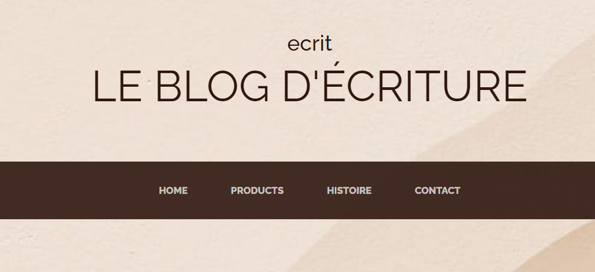
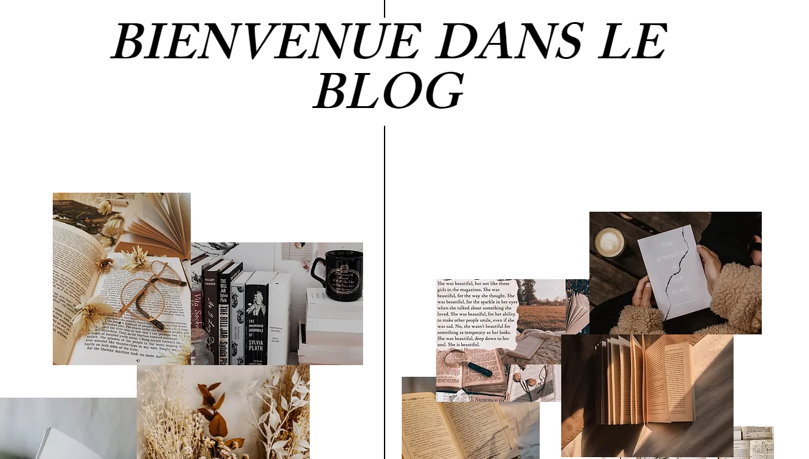
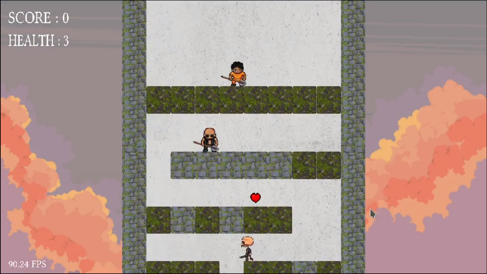
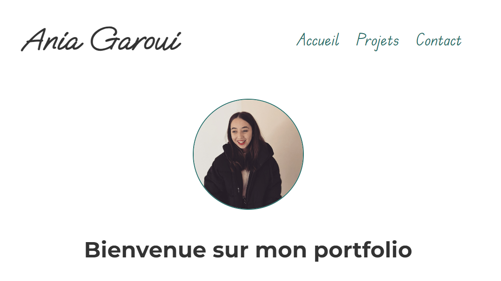

Ania Garoui

Écrit est un site en ligne dédié à l'histoire d'Ania, une passionnée de lecture et d'écriture. Elle partage son expérience et ses conseils pour écrire un roman.
Le site est développé en HTML/CSS.
Veuillez noter que ce site est encore en cours de développement et est susceptible d'être amélioré.
Le site est développé en HTML/CSS.
Veuillez noter que ce site est encore en cours de développement et est susceptible d'être amélioré.

Write est également un site en ligne similaire à Écrit, mais il est développé en utilisant Wix.
Il contient des rubriques en plus telles que le forum et la connexion.
Il contient des rubriques en plus telles que le forum et la connexion.

Un jeu 2D de type scroller vertical inspiré de Once Upon a Tower.
Il a été développé en langage C en utilisant les libraires SDL2.
Il a été développé en langage C en utilisant les libraires SDL2.

Ce portfolio regroupe les connaissances acquises en développement Web en deuxième année de licence informatique.
Développé en HTML/CSS/JS
Développé en HTML/CSS/JS
Vous retrouvez également quelques autres projets plus basiques (Dominos, jeu de la vie, ...) sur mon GitHub.